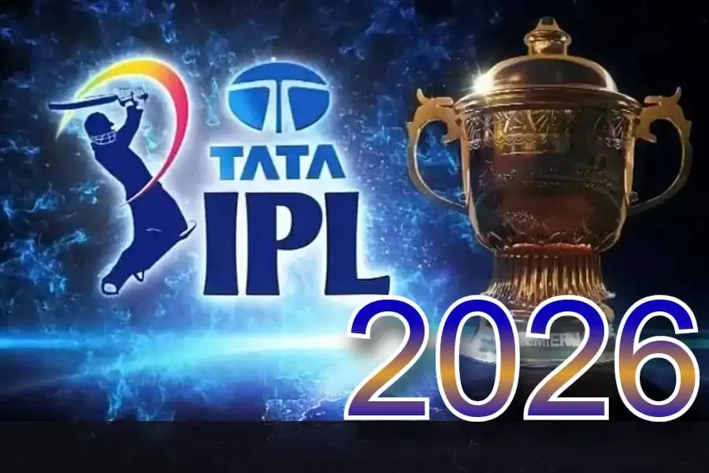
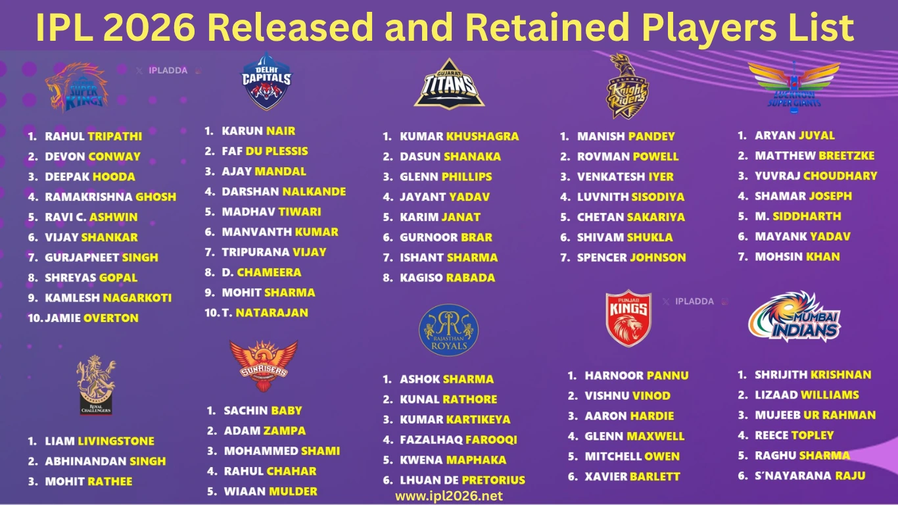
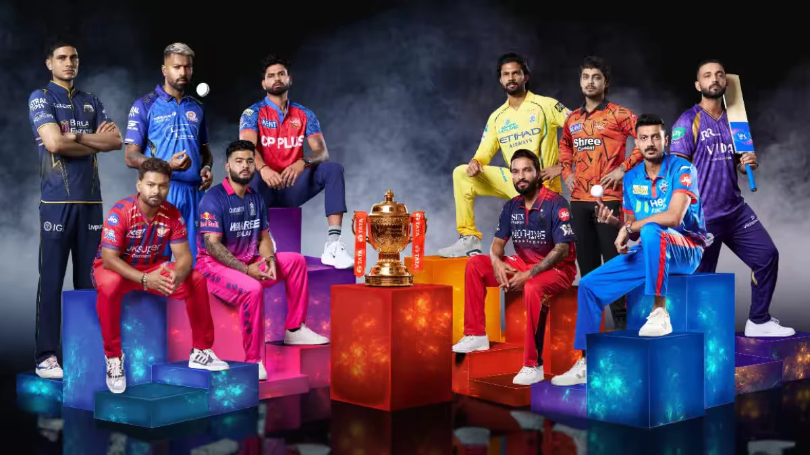

The Indian Premier League (IPL) is a professional Twenty20 (T20) cricket league in India, organised by the Board of Control for Cricket in India (BCCI).[1] Founded in 2007, it features ten city-based franchise teams.[2] The IPL is the most popular and richest cricket league in the world and the 11th richest sporting league in the world by revenue. It is held annually between March and May. It has an exclusive window in the Future Tours Programme of the International Cricket Council, resulting in fewer international tours occurring during the seasons.[3] It is also the most viewed Indian sports event, per the Broadcast Audience Research Council.[4][5]
In 2010, the IPL became the first sporting event to broadcast live on YouTube.[6][7] In 2014, it ranked sixth in attendance among all sports leagues.[8] Inspired by the success of the IPL, other Indian sports leagues have been established.[a][11][12] The IPL is the second-richest sports league in the world by per-match value, after the National Football League.[13] In 2023, the league sold its media rights for the next four seasons for US$6.4 billion to Viacom18 and Star Sports,[14] which meant that each IPL match was valued at $13.4 million.[15] As of 2025, there have been 18 seasons of the tournament. The current champions are the Royal Challengers Bengaluru, who won the 2025 season after defeating the Punjab Kings in the final.

The group format has been reversed to be similar to that of 2023 IPL. Each team will play once against the teams in their group and twice against the teams in the other group. After the group stage, the top four teams, based on aggregate points, would advance to the playoffs. In this stage, the top two teams compete with each other (in a match titled "Qualifier 1"), as do the remaining two teams (in a match titled "Eliminator"). While the winner of Qualifier 1 would directly qualify for the final match, the losing team had another chance to qualify for the final match by competing against the winning team of the Eliminator (in a match titled "Qualifier 2"). The winner of this subsequent Qualifier 2 match advanced to the final match. Teams were seeded into groups based on the number of titles they have won.[3][4][5]
The IPL Governing Council had initially announced that the IPL would expand to 84 matches for 2026 and 2027,[6] with it expected to expand to 94 matches from 2028 onwards with the return of the complete double round-robin format that was used until 2021.[7] However, the number of matches was kept as 74 for one more edition as it was in the previous four seasons.[8][9]

2026 IPL Teams & Captains
[Chennai Super Kings (CSK): Ruturaj Gaikwad
[Delhi Capitals (DC): Axar Patel
[Gujarat Titans (GT): Shubman Gill
[Kolkata Knight Riders (KKR): Ajinkya Rahane
[Lucknow Super Giants (LSG): Rishabh Pant
[Mumbai Indians (MI): Hardik Pandya
[Punjab Kings (PBKS): Shreyas Iyer
[Rajasthan Royals (RR): Riyan Parag
[Royal Challengers Bengaluru (RCB): Rajat Patidar
[Sunrisers Hyderabad (SRH): Ishan Kishan (replacing Pat Cummins)